Apetito sin disculpas.Appetite without apology.Apetite sem desculpas.L'appétit, sans excuses.Appetito senza scuse.Appetit ohne Entschuldigung.
Carne al fuego, vegetales a la brasa y un trago que se sirve sin preguntar. Cada plato lleva su marca: los glifos rojos son el alfabeto de la casa.
Meat over fire, vegetables off the coals and a drink poured without asking. Every dish carries its mark: the red glyphs are the house alphabet.
Carne no fogo, legumes saídos da brasa e um drinque servido sem pedir. Cada prato leva sua marca: os glifos vermelhos são o alfabeto da casa.
De la viande sur le feu, des légumes tirés des braises et un verre servi sans qu'on le demande. Chaque plat porte sa marque : les glyphes rouges sont l'alphabet de la maison.
Carne sul fuoco, verdure dalla brace e un drink versato senza chiedere. Ogni piatto porta il suo segno: i glifi rossi sono l'alfabeto della casa.
Fleisch über dem Feuer, Gemüse aus der Glut und ein Drink, eingeschenkt, ohne zu fragen. Jedes Gericht trägt sein Zeichen: Die roten Glyphen sind das Alphabet des Hauses.


Feast for the senses
Del corte al fuego.From the cut to the fire.Do corte ao fogo.De la découpe au feu.Dal taglio al fuoco.Vom Schnitt ins Feuer.
La carne madura en cámara con su etiqueta y su fecha, el pescado cuelga hasta estar listo y todo termina sobre la brasa. Así trabaja la cocina de Fermín Azkue: paciencia primero, fuego después.
Meat ages in the chamber with its tag and its date, fish hangs until it is ready, and everything ends over the coals. That is how Fermín Azkue's kitchen works: patience first, fire after.
A carne matura na câmara com sua etiqueta e sua data, o peixe fica pendurado até o ponto certo e tudo termina na brasa. Assim funciona a cozinha de Fermín Azkue: primeiro a paciência, depois o fogo.
La viande mature en chambre avec son étiquette et sa date, le poisson est suspendu jusqu'à être prêt, et tout finit sur les braises. Ainsi travaille la cuisine de Fermín Azkue : la patience d'abord, le feu ensuite.
La carne frolla in cella con la sua etichetta e la sua data, il pesce resta appeso finché non è pronto, e tutto finisce sulla brace. Così lavora la cucina di Fermín Azkue: prima la pazienza, poi il fuoco.
Das Fleisch reift in der Kammer mit Etikett und Datum, der Fisch hängt, bis er so weit ist, und alles endet über der Glut. So arbeitet die Küche von Fermín Azkue: erst Geduld, dann Feuer.
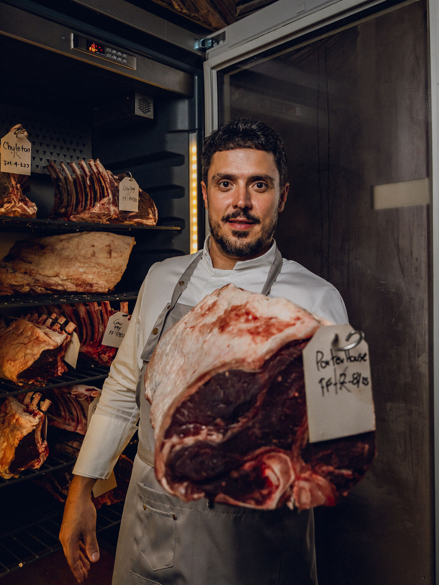
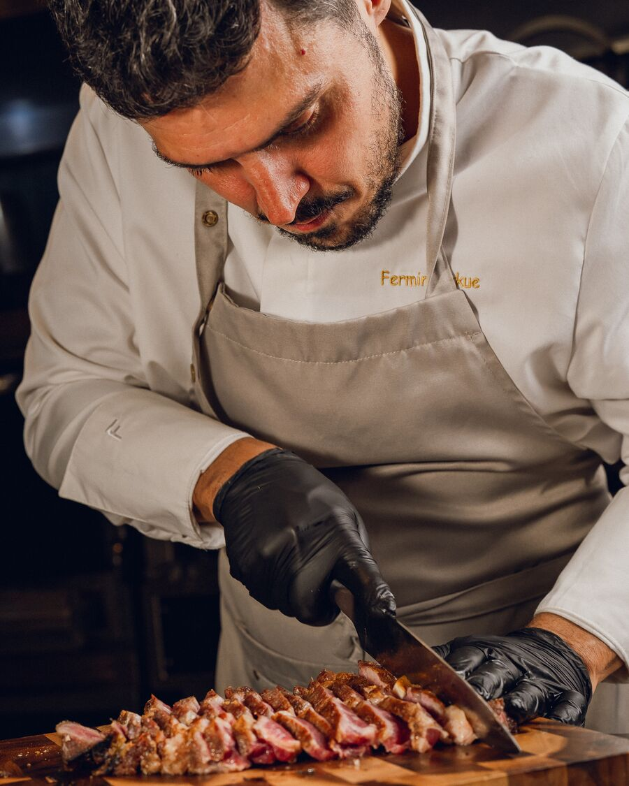
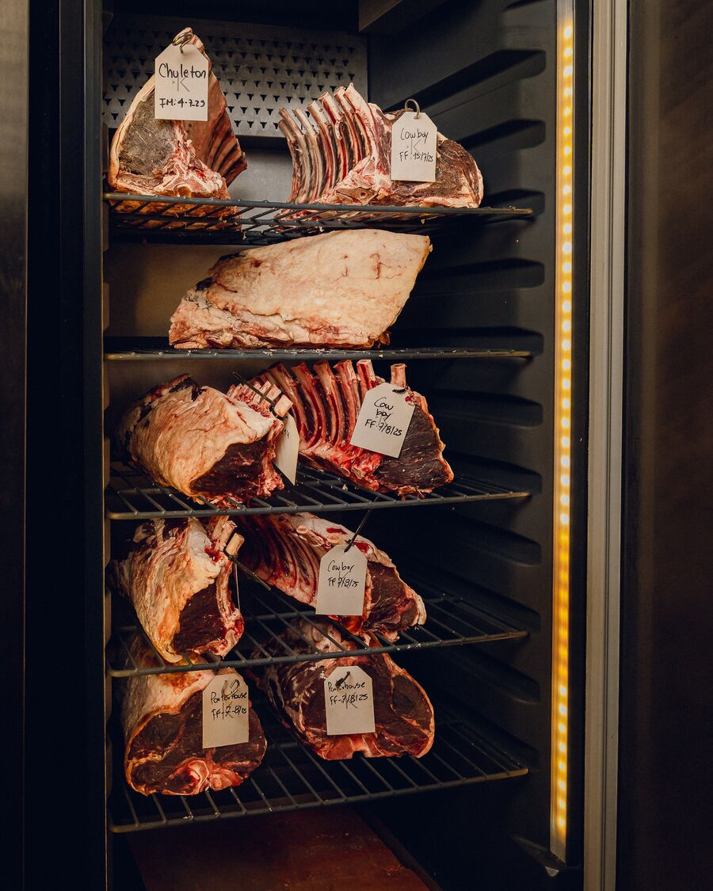
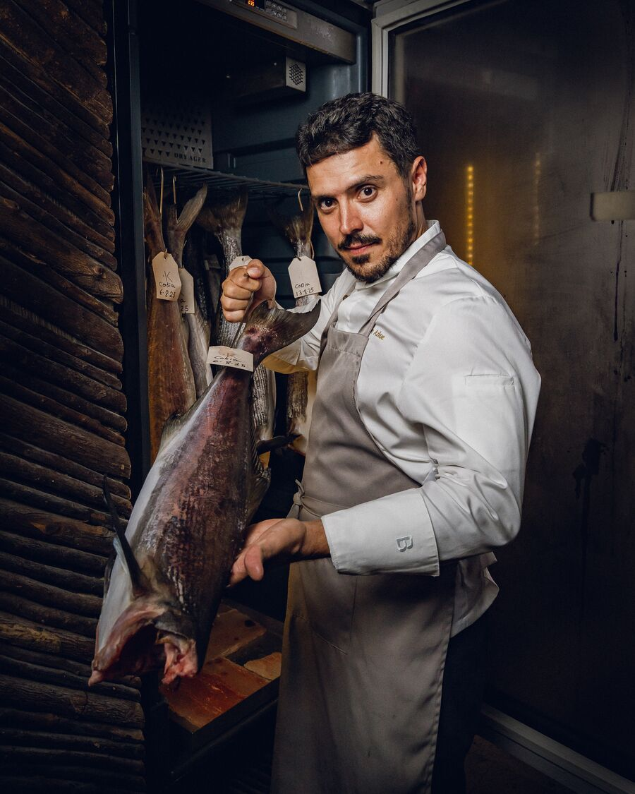
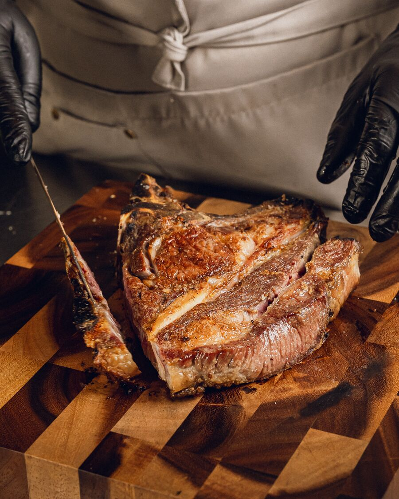
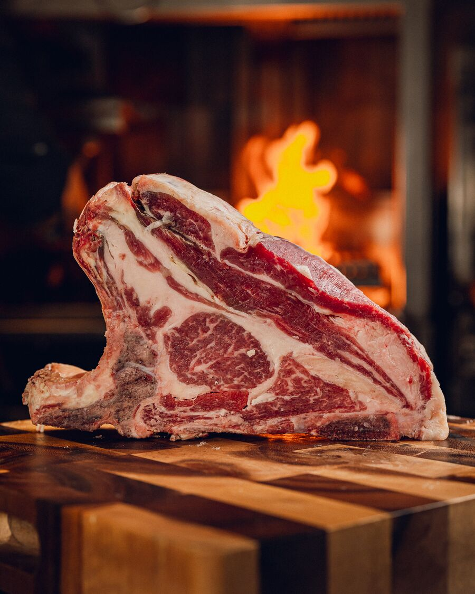
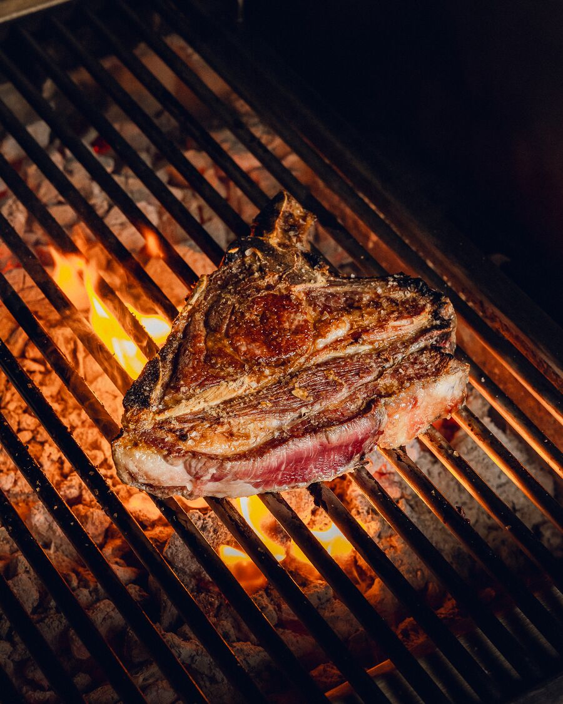
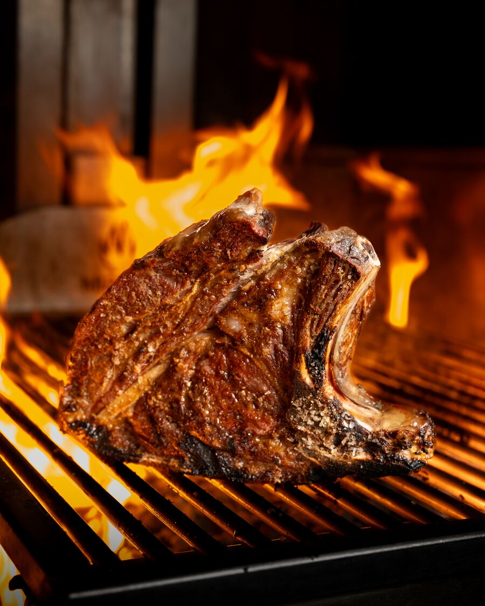
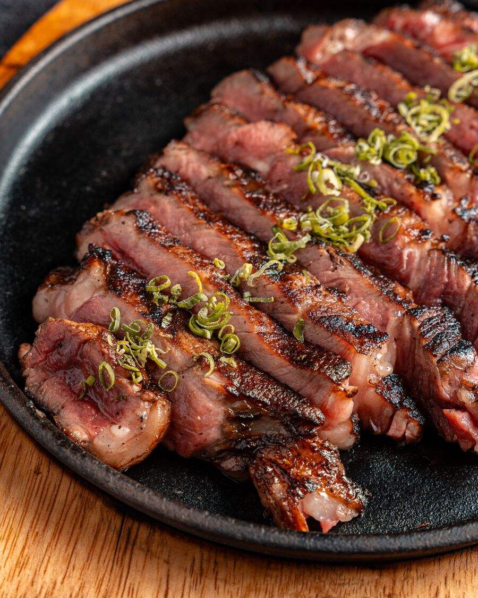
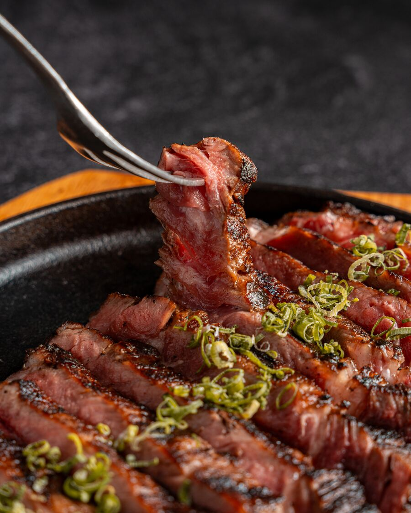
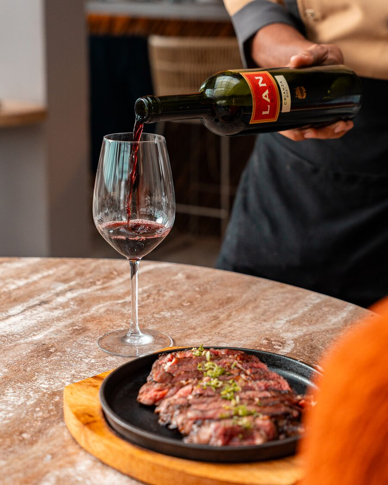
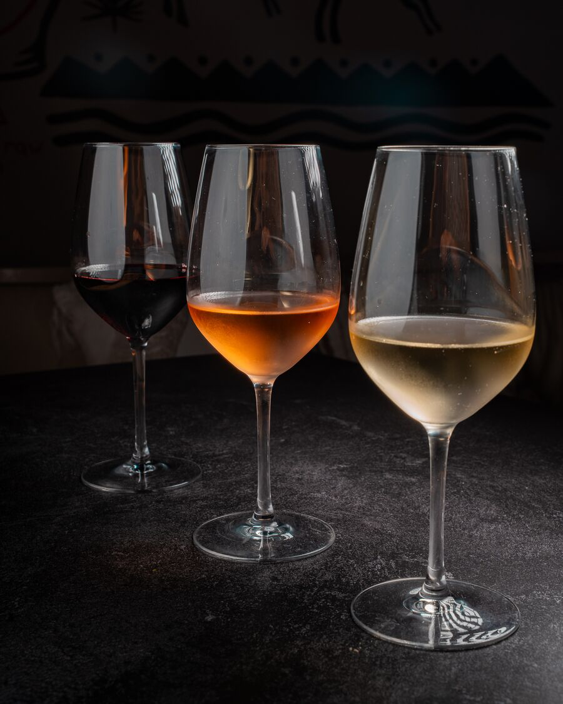
Notas desde la casaNotes from the houseNotas da casaNotes de la maisonNote dalla casaNotizen aus dem Haus
Restaurantes imperdibles en Cartagena: del Centro Histórico a Getsemaní
Cocina caribeña de autor, ceviche de leyenda y clásicos de la ciudad amurallada: una lista para comer bien en Cartagena.

Dónde celebrar un cumpleaños en Cartagena: cena y fiesta en la misma casa
Una mesa larga, un brindis y, si es fin de semana, el club hasta las 3 am. Sin cambiar de lugar.

Dónde comer en el Centro Histórico de Cartagena: una casa, cuatro mundos
Almuerzo largo, cena tardía o una noche que no termina: todo cabe en una casa colonial a dos cuadras de la Plaza Santo Domingo.
Must-try restaurants in Cartagena: from the Old City to Getsemaní
Chef-driven Caribbean cooking, legendary ceviche and walled-city classics: a list for eating well in Cartagena.
Restaurantes imperdíveis em Cartagena: do Centro Histórico a Getsemaní
Cozinha caribenha autoral, ceviches lendários e clássicos da cidade murada: uma lista para comer bem em Cartagena.
Les restaurants incontournables de Cartagena : de la vieille ville à Getsemaní
Cuisine caribéenne d'auteur, ceviches légendaires et classiques de la ville fortifiée : une liste pour bien manger à Cartagena.
Ristoranti imperdibili a Cartagena: dal centro storico a Getsemaní
Cucina caraibica d'autore, ceviche leggendari e classici della città murata: una lista per mangiare bene a Cartagena.
Restaurants in Cartagena, die man nicht verpassen sollte: von der Altstadt bis Getsemaní
Karibische Autorenküche, legendäre Ceviches und Klassiker der ummauerten Stadt: eine Liste, um in Cartagena gut zu essen.
Where to celebrate a birthday in Cartagena: dinner and a party under one roof
A long table, a toast and, at the weekend, the club until 3 am. Without changing venues.
Onde comemorar aniversário em Cartagena: jantar e festa sob o mesmo teto
Uma mesa longa, um brinde e, no fim de semana, o club até as 3 da manhã. Sem trocar de lugar.
Où fêter un anniversaire à Cartagena : dîner et fête sous le même toit
Une longue table, un toast et, le week-end, le club jusqu'à 3 h. Sans changer d'adresse.
Dove festeggiare un compleanno a Cartagena: cena e festa sotto lo stesso tetto
Una tavola lunga, un brindisi e, nel fine settimana, il club fino alle 3. Senza cambiare locale.
Wo man in Cartagena Geburtstag feiert: Dinner und Party unter einem Dach
Eine lange Tafel, ein Toast und am Wochenende der Club bis 3 Uhr. Ohne die Location zu wechseln.
Where to eat in Cartagena's Old City: one house, four worlds
A long lunch, a late dinner or a night that refuses to end: it all fits inside one colonial house two blocks from Plaza Santo Domingo.
Onde comer no Centro Histórico de Cartagena: uma casa, quatro mundos
Um almoço longo, um jantar tardio ou uma noite que não quer acabar: tudo cabe numa casa colonial a duas quadras da Plaza Santo Domingo.
Où manger dans la vieille ville de Cartagena : une maison, quatre mondes
Un long déjeuner, un dîner tardif ou une nuit qui refuse de finir : tout tient dans une maison coloniale à deux rues de la Plaza Santo Domingo.
Dove mangiare nel centro storico di Cartagena: una casa, quattro mondi
Un pranzo lungo, una cena tardiva o una notte che non vuole finire: tutto sta in una casa coloniale a due isolati da Plaza Santo Domingo.
Essen in Cartagenas Altstadt: ein Haus, vier Welten
Ein langes Mittagessen, ein spätes Dinner oder eine Nacht, die nicht enden will: Alles passt in ein Kolonialhaus zwei Blocks von der Plaza Santo Domingo.